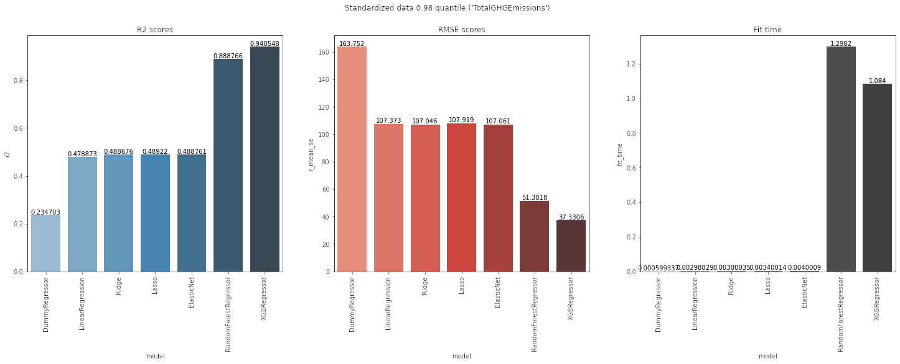

Data Scientist # Projet élec
Anticipez les besoins en consommation électrique de bâtiments
Florian LOTTE

Florian LOTTE
10 ans d'experience en développement
- Développeur embarqué C++/Java (6 ans)
- Développeur backend Python (2 ans)
- Développeur blockchain IOT Scala (1 an)
Problématique

Des relevés minutieux ont été effectués par vos agents en 2015 et en 2016. Cependant, ces relevés sont coûteux à obtenir, et à partir de ceux déjà réalisés, vous voulez tenter de prédire les émissions de CO2 et la consommation totale d’énergie de bâtiments pour lesquels elles n’ont pas encore été mesurées.

- Réaliser une courte analyse exploratoire
- Tester différents modèles de prédiction afin de répondre au mieux à la problématique
- Evaluer l’intérêt de l’ENERGY STAR Score pour la prédiction d’émissions
Jeux de données
Données provenant de la ville de Seattle
- www.kaggle.com/city-of-seattle/sea-building-energy-benchmarking
- Données sur 2ans (2015, 2016)
- 2015 - 1.51mo - 47 features - 3340 observations
- 2016 - 1.17mo - 46 features - 3376 observations
- Features et observations à harmoniser !
Nettoyage et exploration
Synthèse
- Uniformisation des features
- Concaténation des DataFrames 2015 et 2016
- Suppression des features inutiles
- Suppression des bâtiments destinés à l’habitation
- Suppression des features corrélées
- Traitement des outliers et des NaN
- Traitement des données text
- Traitement de la localisation
- Encoding des types object
Détails du jeu de données final
- FINAL-building-energy-benchmarking.csv
- 817ko
- 37 features
- Informations de locatisation et d'identifications
- Taille et forme du batiments
- Infomations de destinations et d'usages
- Infomations qualitatives
- Infomations quantitatives non corrélées entre elles
- 3301 observations
Evaluation des modèles supervisées
Synthèse
- Normalisation de la distribution des features quantitatives
- Analyse préliminaire des modèles supervisées :
- Modèle Naif
- Regression linéaire
- Régression Rigide, Lasso, ElasticNet
- Arbre de décision RandomForest, XGBoost
- Analyse avancé des modèles supervisées
- Avec des données standardisées
- Avec les 4 features les plus importantes
- Avec les 8 features les plus importantes
- Avec l'Energy Star score
- Avec 0.98 quantile
- Avec 0.98 quantile et avec l'Energy Star score
Conclusion
Meilleur modèle pour la prédiction d'émission
La régression XGBoost (r2=0.941) est la meilleur si nous ne tenons pas compte de temps de calcul et si nous traitons correctement les outliers
Meilleur modèle pour la prédiction de consommation d'énergie

La régression XGBoost (r2=0.768) est la meilleur si nous ne tenons pas compte de temps de calcul et si nous traitons correctement les outliers
Pertinance de l'EnergyStar Score
Pour les données de consomation energétique
Avec outliers : le r2 score passe de 0.534 à 0.620 (XGBRegressor)
Sans outliers : le r2 score passe de 0.768 à 0.777 (XGBRegressor)
L'EnergyStar Score semble pertinent pour la consomation d'energy